# Ceci est un commentaire qui ne sera pas exécuté
# La ligne suivante sera exécutée
2 + 2Ce tutoriel est adapté de Getting started with R and RStudio du site Our Coding Club.
Note
Pour savoir comment installer R et RStudio, cliquez ici
Organiser ses fichiers
Créer un projet
Pour éviter de perdre du temps à chercher des fichiers dont on a oublié le nom et l’emplacement, il est utile d’organiser son travail à l’aide de projets.
Pour créer un projet, cliquez sur File puis New project… :

Choisissez New Directory puis New Project
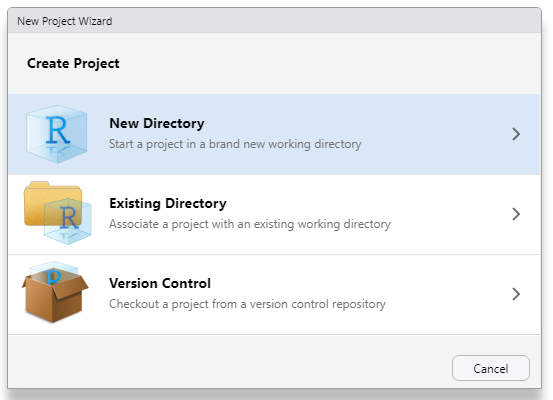
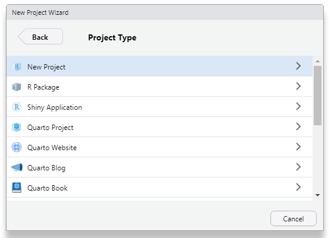
Dans la fenêtre Create New Project, attribuez un nom et un emplacement au projet, puis cliquez sur Create project
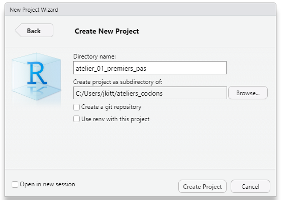
Bonne pratiques : nommer ses fichiers
Pour vous simplifier la vie, voici quelques recommandations :
- privilégiez les noms courts et explicites (à éviter : fichier_2e_version_a_verifier.txt)
- ne mettez ni espace ni caractères spéciaux (accents, symboles, …)
- pour les dates, privilégiez le format AAAAMMJJ (année, mois, jour)
- mettez l’élément le plus important en premier (par exemple : projet_date_contenu)
- optez pour l’une de ces deux conventions d’écritre : camel case (MonProjet) ou snake case (mon_projet)
Une fois que vous avez trouvé une façon de procéder, utlisez-la pour l’ensemble de vos fichiers afin de rester cohérent !
Quand vous voudrez travailler à nouveau sur ces données, il vous suffira de double-cliquer sur le fichier .Rproj pour ouvrir le projet et accéder à tout ce qu’il contient.

Créer une arborescence
Il est toujours préférable de passer un peu de temps à bien organiser un projet lors de sa création, plutôt que de passer beaucoup de temps par la suite à déplacer des fichiers, les renommer, les rechercher, …
Pour créer un nouveau dossier dans votre projet, cliquez sur New Folder dans l’onglet Files du navigateur : 
L’organisation proposée ci-dessous est utilisable dans une très grande majorité de cas :
- raw : contient les données brutes qui seront utilisées mais laisées en l’état.
- data : contient les données issues de la manipulation des données brutes (sous-ensembles, données corrigées, renommées, nouvelles variables calculées, …)
- R : contient le code utilisé pour manipuler les données, générer les figures, rédiger les rapports, …
- resultats : contient les fichiers de résultats issus de l’analyse.
- figures : contient les graphiques et figures générées lors de l’analyse.
- docs : contient les rapports rédigés au cours de l’analyse, les présentations de résultats, des articles en lien avec l’analyse, les documents concernant les outils utlisés, …
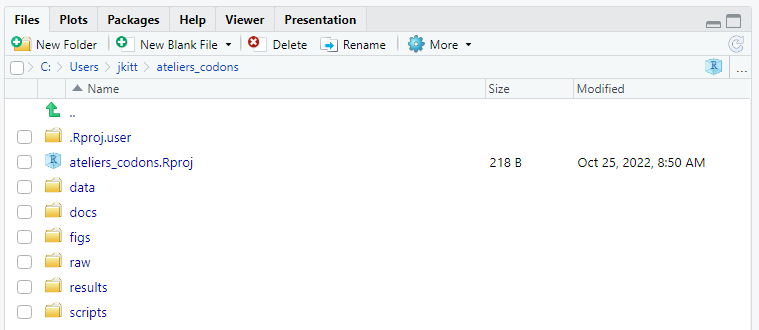
Utiliser un script
Important
Le code tapé et exécuté dans la console ne sera plus disponible quand vous quitterez votre session RStudio. A la manière d’un document Word, un script vous permet de sauvegarder votre code afin d’y accéder ultérieurement ou de le partager.
Pour ouvrir un nouveau script, cliquez sur le “plus” dans le coin supérieur gauche de la fenêtre RStudio puis sur R Script.
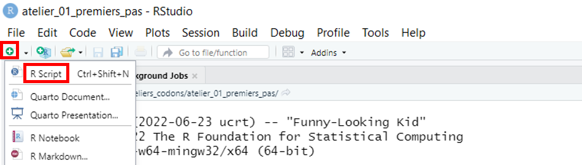
Raccourcis clavier : nouveau script
Pour ouvrir un nouveau script, utilisez la combinaison Ctrl + Shift + N
Un nouveau panneau s’affiche :
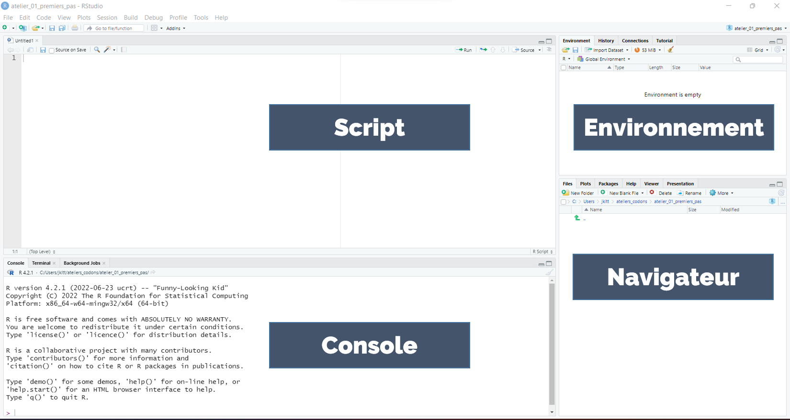
Bonne pratiques : commenter ses scripts
Prenez dès maintenant l’habitude de commenter vos scripts. Il s’agit de rédiger des commentaires qui expliquent ce que fait votre code, pour le rendre plus compréhensible par vos collègues - et par vous-même quand vous reviendrez sur un script après un certain temps ! Pour ajouter un commentaire, utiliser un # au début d’une ligne puis rédigez votre commentaire. Dans R, un code placé après un # n’est pas exécuté :
Pour commencer, ajoutons des informations en haut de notre script :
# Ateliers codons
# 01 - Premiers pas avec R
# 2022-10-14
Raccourcis clavier : commentaires
Pour commenter ou dé-commenter une ligne de code, utilisez la combinaison Ctrl + Shift + C.
Manipuler des données
Importer un jeu de données
Nous allons analyser une liste d’espèces d’oiseaux menacées en Auvergne (données de 2015 obtenues sur le site de la DREAL).
Ces données se trouvent dans un fichier appelé oiseaux.csv, disponible en ligne, que nous allons télécharger.
Nous allons pour cela utiliser une fonction de R. Une fonction permet d’exécuter une action : calculer une somme, importer ou exporter un fichier, ajouter une colonne dans un tableau, …
Toutes les fonctions se présentent de la façon suivante :
ma_fonction(data, arguments, ...)On fait appel à la fonction en tapant son nom, puis on précise les arguments de la fonction entre parenthèses. Un argument peut être obligatoire ou optionnel, et modifie la façon dont la fonction est exécutée.
Notre première ligne de code va donc télécharger le fichier oiseaux.csv et stocker ce fichier dans un objet de notre environnement R : nous assignons le fichier à l’objet. Cette opération s’effectue à l’aide de la flèche d’assignation <- :
# Importer la liste d'especes d'oiseaux menacees en Auvergne
oiseaux <- read.csv("https://raw.githubusercontent.com/codons-blog/C-01-PremiersPas/main/oiseaux.csv")Notez la présence des guillemets autour du lien vers le fichier : utlisez toujours des guillements lorsque vous indiquez un chemin vers un fichier.
Bonne pratiques : auto-complétion
R vous aide à compléter votre code : tapez re puis Tab, et vous verrez s’afficher une liste de fonctions ou d’objets commençant par ces deux lettres. Vous pouvez naviguer à l’aide des flèches haut et bas et valider votre choix en appuyant à nouveau sur Tab. Cette fonctionnalité de R est particulièrement utile lorsque vous manipulez des fichiers ou objets ayant un nom complexe.
Raccourcis clavier : flèche d’assignation
Pour insérer une flèche d’assignation, utilisez la combinaison ALt + “-” (tiret du 6).
Exécutez cette fonction en plaçant le curseur sur la ligne et en cliquant sur Run :
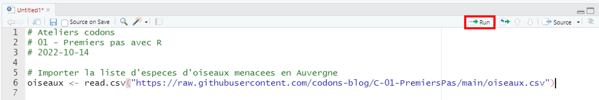
Raccourcis clavier : exécuter du code
Pour exécuter une ou plusieurs lignes de code, sélectionnez les lignes et utilisez la combinaison Ctrl + Entrée
Notre environnement contient maintenant un objet oiseaux, et vous pouvez voir l’indication 172 obs. of 4 variables : le jeu de données contient 172 observations (lignes) et 4 variables (colonnes).
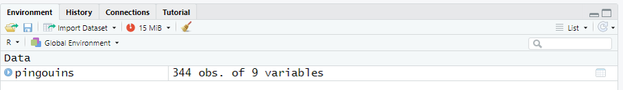
En cliquant sur la flèche bleue à gauche du nom de l’objet, vous aurez accès à plus d’informations :
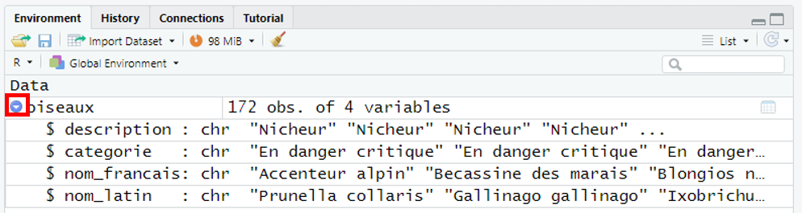
Nom des variables : le tableau contient 4 variables nommées description, categorie, nom_francais et nom_latin. Le signe \(** devant les noms de variables indique qu'il s'agit de colonnes : l'opérateur dollar permet de sélectionner une colonne dans un tableau. Essayez en tapant dans la console **oiseaux\) et appuyez sur Tab :
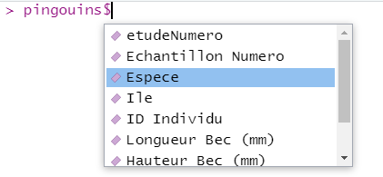
Choisissez la première colonne description et appuyez sur Tab : vous verrez s’afficher les 172 observations de la colonne en question :
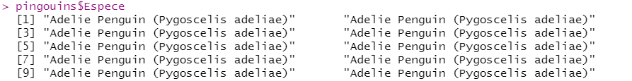
Type de variable : à la suite du nom de variable, chr indique qu’il s’agit d’une variable de type caractère. D’autres types de variables fréquemment rencontrés sont les variables numériques (nombres entiers ou décimaux) et les variables logiques (vrai ou faux).
Premiers éléments de chaque variable : à la suite du type de variable, vous pouvez voir les premiers éléments de chacune des variables.
Vous pouvez afficher le tableau en cliquant sur l’icône à droite :
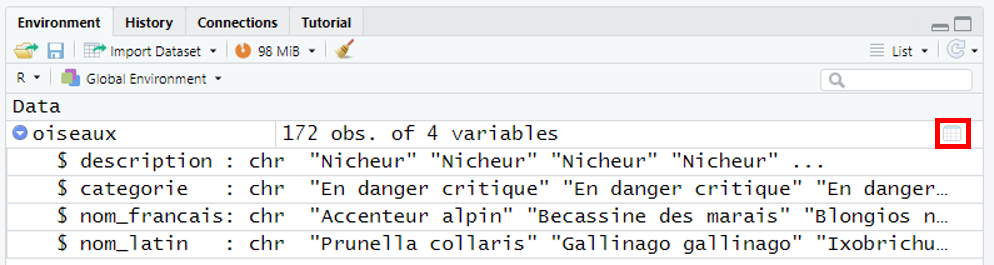
Cela ouvre un nouvel onglet à côté de de votre script :
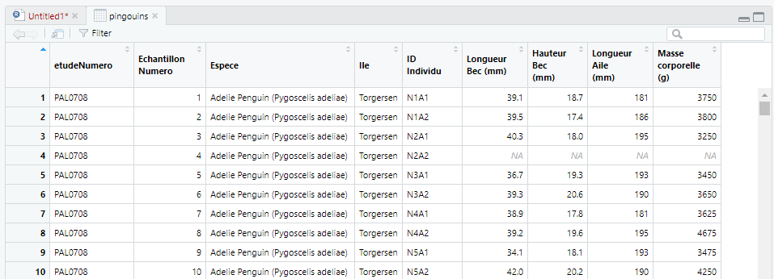
Il est important de sauvegarder régulièrement votre script pour ne pas perdre votre travail. Pour cela, cliquez sur l’icône disquette en haut de votre script :
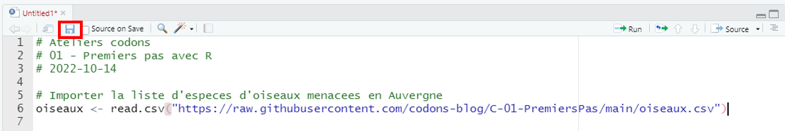
Choisissez le dossier où sera sauvegardé votre script - R dans notre cas, et nommez votre script puis cliquez sur Save :
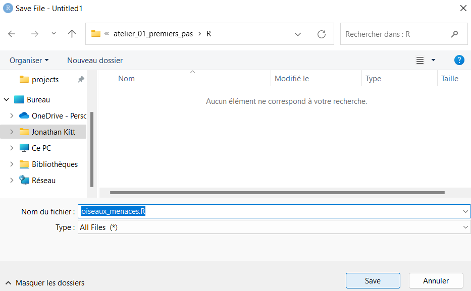
Raccourcis clavier : sauvegarder un script
Pour sauvegarder un script, uilisez la combinaison Ctrl + S